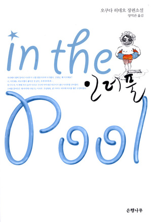
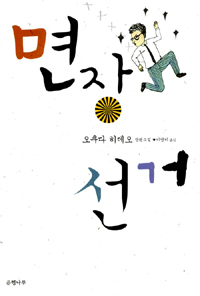
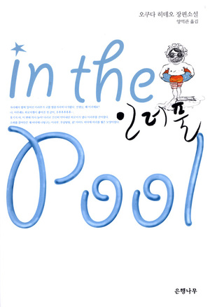
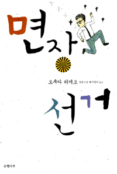
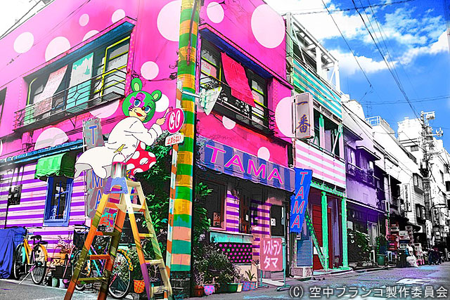
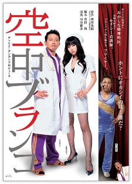

- 저자 오쿠다 히데오
- 번역가 이영미
- 장르 드라마
- 발행일 2004년 4월 25일
소개
심리학의 내용을 폭소가 터질망큼, 하나하나 묘사에 유머러스하며 좀더 다른 시각으로 각 환자들을 치료해 나가는 이야기. 《공중그네》(일본어: 空中ブランコ,くうちゅうブランコ)는 오쿠다 히데오의 소설. 정신과 의사 이라부 시리즈의 2탄. 제 131회 나오키상을 수상하였다. 대한민국에는 은행나무에서 번역하여 출간하였다. 〈공중그네〉,〈고슴도치〉, 〈장인의 가발〉,〈3루수〉,〈여류작가〉로 구성되어있다. 2005년에는 특별 드라마로 제작, 2009년에는 소설을 원작으로 한 동명 타이틀 애니메이션이 제작되어 후지테레비에서 방영. 


- 방영기간 2009년 10월 15일 ~ 2009년 12월 24일
- 원작 오쿠타 히데오
- 구성 이시카와 마나부
- 각본 이시카와 마나부, 무라야마 이사오, 타구치 토모코
- 캐릭터 디자인하시모토 타카시
- 음악모리 히데하루
- 제작사 토에이 애니메이션
- 화수 11
- 공식 사이트 http://www.toei-anim.co.jp/tv/kuchu_buranko /special/index.html#pagetop

스탭
- 원작 오쿠다 히데오
- 기획 아라이 아키히로, 호바라 켄이치로(후지 테레비)
- 각본 하시모토 히로시
- 프로듀서 関口静夫、橋本芙美
- 연출무라카미 쇼스케
- 제작 후지 테레비, 쿄도 테레비
출연
- 아라부 이치로 아베 히로시
- 마유미 샤쿠 유미코
- 야마시타 코헤이 사카이 마사토
- 야스카와 히로미 사토 히토미
- 이노 세이지 엔도 켄이치
- 에리 코쿠부 사치코
- 우치다나 공중그네의 캐쳐